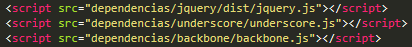
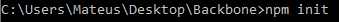
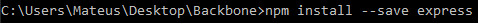
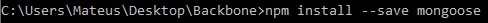
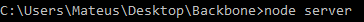
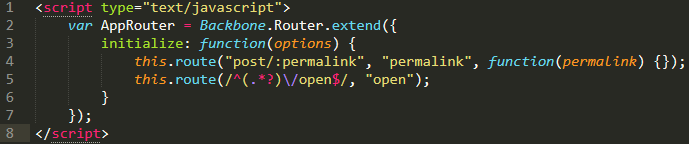
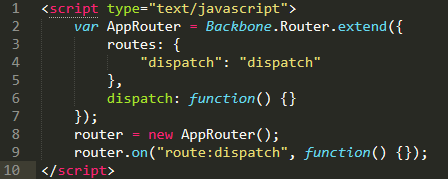

Introdução
Bakbone.js é uma biblioteca javascript que fornece estrutura para as suas aplicações, adapta-se o conceito de MVC (model, view, controller) padrão que foi implementado no início da linguagem server-side como PHP.
Porém ele não é considerado um verdadeiro MVC, pois é considerado como MV * porque C no backbone é para o Collection em vez de Controller. Entretanto ainda lhe dá a funcionalidade similar.
O Backbone faz uso intensivo da biblioteca Underscore.js, sua maior dependência. O framework também precisa da biblioteca jQuery, sua menor dependência, pois você pode utilizar outra biblioteca para a mesma função, como a Zepto por exemplo.
Quando eu preciso Backbone.js?
Se você estiver desenvolvendo uma aplicação web que exige muito javascript, você terá backbone. Se seu aplicativo precisa ser escalável, então você vai precisar de backbone para dar estrutura ao seu código. Se você está construindo uma aplicação web que muito com linhas de jQuery para atravessar o DOM, dar animações, ou muitos eventos de ligação para o seu aplicativo, você vai com certeza querer usar o Backbone.
Se você estiver criando um tema para wordpress, provavelmente irá precisar de um pouco de jQuery, você não precisa usar backbone.
A conclusão é que, se você quiser trazer o seu front-end para o próximo nível, um nível mais elevado, você vai precisar usar backbone.
Instalação
Para instalar o Backbone.js é preciso importar todas as dependências necessárias atraves da tag html script dentro do arquivo html. Por exemplo:
A imagem acima mostra a importação das dependências necessárias, que são: Jquery, Underscore e o próprio Backbone.
Dependências para conexão com o banco
-
Primeiro você precisa executar o seguinte comando via cmd dentro do diretório do projeto:
Este comando irá adicionar o arquivo package.json ao projeto.
-
Após isso você deverá executar o seguinte comando:
Este comando irá instalar o framework Express, que é necessário.
-
Depois você precisa executar o seguinte comando:
Este comando irá instalar o Mongoose, que é uma biblioteca do Nodejs que proporciona uma solução baseada em esquemas para modelar os dados da sua aplicação.
-
Por último você precisa iniciar o servidor, isto é feito com o seguinte comando:

Para que todos os passos executados acima funcionem você deve ter obrigatoriamente o framework Node.js instalado em seu computador.
Sistema de rotas
Existem dois tipo de parâmetros possíveis na definição de uma rota dinâmica:
-
:parametro - essa notação definirá que existirá somente este parametro definido. Como exemplo considere "posts/:id". Isso significa que a URL mapeará somente o primeiro parâmetro após a "/", definindo-o como o id. Uma URL com /post/1/2 implesmente desconsiderará o parâmetro 2. Caso precise de mais parâmetros basta defnir a rota como posts/:id/:outroid.
-
*parametro - Em comparação com o parâmetro anterior, este irá mapear diversos parâmetros de uma URL, deconsiderando seu prefixo. Isso significa que uma definição posts/*ids considerará todos os valores que aparecem depois de posts/. Por exemplo, posts/1/2 irá ler os valores 1 e 2
Outra maneira de se definir a classe Backbone.Router é através de seu construtor. Assim como o metodo route() existe o initialize() que obtem um hash como parâmetro. Ele receberá dois argumentos obrigatórios e um opcional, sendo o primeiro argumento a rota que será definida igual anteriormente, o segundo argumento será o nome da ação representada pela rota e será utilizada como identificador do evento rota, o terceiro argumento é opcional sendo uma função a ser executada quando a rota for acessada.
Caso o usuário queira voltar a página, para ainda usar uma URL amigável pode-se adicionar uma função para lançar o evento "route:dispatch" que captura o histórico do navegador e utiliza na URL.
Conclusão
O Backbone é bem flexível simples e direto. Ao trabalhar como ele você não terá que mudar sua forma de pensar JavaScript.
Pontos positivos
-
Leve pesando apenas 6.5kb.
-
Flexível: não vai reclamar se você precisar utilizar outras bibliotecas.
-
Ótima documentação
-
Comunidade enorme.
Pontos negativos
-
Templates: utilize o handlebars ou outro no lugar do undescore